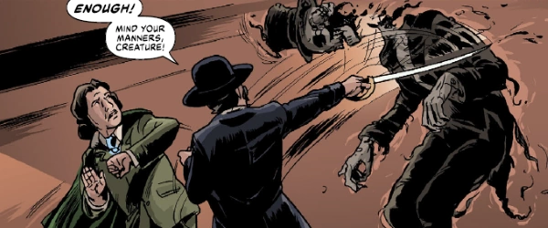

This requires some explanation - first, there was Fiends of the Eastern Front, which was a mash-up of WWII (Russians vs. Germans) and vampires. As the tale was expanded, they did a series set on the western front of WWII, which was called Fiends of the Western Front. However, that's not what this page is for! (That tale is listed on the page for Fiends of the Eastern Front.) Just to add to the mix, there was also Fiends of West Berlin - which was an occult spy thriller in the same timeline.
This Fiends of the Western Front is set in the same timeline, but has shifted the action over to the wild west of the USA.
Art by Warren Pleece
| Story Title | Parts | Pages | w indicates a wraparound coverCovers | Year(s) | Issues | Writer | Artist | Colourist | Letterer |
|---|---|---|---|---|---|---|---|---|---|
| Wilde West: Prologue | 1 | 6 | Tom Foster1 | 2022 | 2310 | Ian Edginton | Warren Pleece | <-- | Simon Bowland |
| Wilde West | 11 | 60 | 2414: Tiernen Trevallion 2420: Tiernen Trevallion 2423: Tiernen Trevallion3 | 2024-2025 | 2413-2423 | Ian Edginton | Tiernen Trevallion | <-- | Jim Campbell |
| Red Tide | 1 | 10 | 0 | 2025 | 2437 | Ian Edginton | Nick Percival | <-- | Jim Campbell |
| >> Teasers << | |||||||||
Thrills of the Future.Wilde West | 1 | 0.5 | 0 | 2024 | 2378 | n/a | Tiernan Trevallion | <-- | n/a |
| year | episodes | pages |
| 2013 | 0 | 0 |
| 2014 | 0 | 0 |
| 2015 | 0 | 0 |
| 2016 | 0 | 0 |
| 2017 | 0 | 0 |
| 2018 | 0 | 0 |
| 2019 | 0 | 0 |
| 2020 | 0 | 0 |
| 2021 | 0 | 0 |
| 2022 | 1 | 6 |
| 2023 | 0 | 0 |
| 2024 | 1 | 10 |
| 2025 | 11 | 60 |
| 2026 | 0 | 0 |
| 2027 | 0 | 0 |
| 2028 | 0 | 0 |
| 2029 | 0 | 0 |
| 2030 | 0 | 0 |
| 2031 | 0 | 0 |
| 2032 | 0 | 0 |
| 2033 | 0 | 0 |
| 2034 | 0 | 0 |
Comic strip data (excludes other content):